방송통신산업기사 (2005-03-06 기출문제)
1과목: 디지털 전자회로
1. 진폭변조에서 변조도 80[%]이고 반송파 평균전력이 300[W]일 때 피변조파의 평균 전력은?
- 328[W]
- 396[W]
- 440[W]
- 520[W]
(정답률: 알수없음)

2. 다음 그림과 같은 J - K F/F 회로에서 클럭펄스가 몇 개 입력될 때 Q2에 출력되는가?
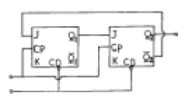
- 3
- 4
- 5
- 6
(정답률: 알수없음)
3. 이상적인 연산 증폭기의 특징으로 적당치 않은 것은?
- 무한대의 입력 임피이던스
- 무한대의 출력 임피이던스
- 무한대의 전압 이득
- 무한대의 대역폭
(정답률: 알수없음)
4. 그림은 이상적인 펄스이다. 이 펄스의 점유율 D 는?
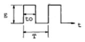
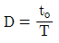
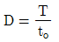
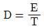
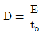
(정답률: 알수없음)
5. 전압 증폭도가 20[㏈]와, 60[㏈]인 증폭기를 직렬로 연결시키면 종합 이득은 얼마인가?
- 10
- 100
- 1000
- 10000
(정답률: 알수없음)
6. 다음 중 소비전력이 가장 적은 소자는?
- TTL
- ECL
- RTL
- CMOS
(정답률: 알수없음)
7. 정논리(positive logic)에서 입력이 A, B일 때 회로의 출력(Y)을 나타내는 논리식은?
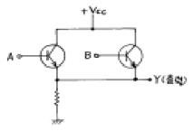
- AB
- A+B
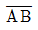
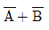
(정답률: 알수없음)
8. 5 : 1의 리플 카운터를 설계하고자 한다. 최소한 몇 개의 플립플롭이 필요한가?
- 4개
- 5개
- 6개
- 7개
(정답률: 알수없음)
9. 다음 논리식을 간단히 한 결과는?
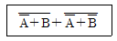
- A + B
- AB
- A
- B
(정답률: 알수없음)
10. 다음 중 입출력장치를 마이크로컴퓨터에 연결하는 데에 필요한 장치는?
- 인터페이스(interface)회로
- 레지스터(register)회로
- 누산기(accumulator)회로
- 계수기(counter)회로
(정답률: 알수없음)
11. 다음 그림과 같이 NAND 게이트가 연결되어 있다. 이회로와 등가인 게이트는?
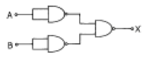
- OR 게이트
- AND 게이트
- NOR 게이트
- NAND 게이트
(정답률: 알수없음)
12. 증폭이득이 60[dB]인 증폭기에서 20[%]의 찌그러짐이 발생했다. 이것을 2[%] 이내로 개선하기 위해서 걸어야 할 부궤환은?
- 10[dB]
- 20[dB]
- 30[dB]
- 40[dB]
(정답률: 알수없음)
13. 플립플롭을 구성하는데 주로 이용되는 회로는?
- 쌍안정 멀티바이브레이터
- 단안정 멀티바이브레이터
- 비안정 멀티바이브레이터
- 무안정 멀티바이브레이터
(정답률: 알수없음)
14. 트랜지스터 증폭회로에서 저항 R1의 역할은?
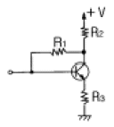
- 입력 임피던스 조절
- 에미터 바이어스
- 부궤환 작용
- 부하저항
(정답률: 알수없음)
15. 주파수변조에서 다음 변조지수 중 대역폭이 가장 넓은 것은?
- 0.17
- 2.9
- 3.1
- 4.2
(정답률: 알수없음)
16. 수정발진기의 직렬공진주파수 fs, 전극용량을 포함한 병렬공진주파수를 fp라 할 때 수정발진기가 안정된 발진을 하기 위한 동작주파수의 조건은?
- fs 보다 낮게 한다.
- fp 보다 높게 한다.
- fs 보다 낮게, fp보다 높게 한다.
- fs 보다 높게, fp보다 낮게 한다.
(정답률: 알수없음)
17. 다음 중 수정 발진자의 특징과 거리가 가장 먼 것은?
- Q(Quality factor)가 매우 높다.
- 주파수 안정도가 1⑤∼108 정도로 매우 안정하다.
- 유도성 영역이 매우 좁다.
- 병렬공진주파수 부근에서 대단히 큰 LC동조회로와 같은 임피던스 특징을 갖는다.
(정답률: 알수없음)
18. 다음과 같은 연산 증폭회로에서 Z에 흐르는 전류 i의 값은 얼마인가?
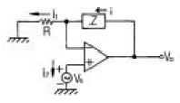
- 0
- i1
- (Z/R)i1
- i1 + i2
(정답률: 알수없음)
19. 트랜지스터의 베이스 접지에서 전류 증폭율이 0.99이다. 이것을 에미터 접지에서의 전류 증폭률로 구하면 얼마인가?
- 96
- 97
- 98
- 99
(정답률: 알수없음)
20. 정전압회로에서 주로 사용되는 다이오드는?
- 터널 다이오드
- 제너 다이오드
- 발광 다이오드
- 바렉터 다이오드
(정답률: 알수없음)
2과목: 방송통신 기기
21. 디지털 방송에서는 수신 전계강도가 일정값 이하로 떨어지면 화면이 전혀 나오지 않는 현상이 일어난다. 이것을 무슨 효과라고 하는가?
- 클리프(Cliff)효과
- 고스트(Ghost)효과
- 에코(Echo)효과
- 다중경로(Multipath)효과
(정답률: 알수없음)
22. 컴포지트 비디오 신호의 IRE 눈금이 맞지 않는 것은?
- 동기 : 40[IRE]
- 셋업 : 7.5[IRE]
- 최대의 백색 : 140[IRE]
- 카메라 신호 : 92.5[IRE]
(정답률: 알수없음)
23. 무궁화위성 1,2호의 디지털신호 변조방식은?
- QPSK
- 8PSK
- BPSK
- DPSK
(정답률: 알수없음)
24. AM 송신기의 출력이 10[W] 이다. 이 출력전력을 [dBm]으로 표현하면 얼마인가?
- 25
- 30
- 40
- 50
(정답률: 알수없음)
25. 하나의 반송파를 여러 사용자가 공유하여 사용하면서 시간 축을 여러 개의 시간 간격으로 나누어서 여러 사용자가 자기에게 할당된 시간 간격을 다른 사용자의 시간 간격과 겹치지 않게 사용하는 방식은 무엇인가?
- FDMA
- TDMA
- CDMA
- W-CDMA
(정답률: 알수없음)
26. 방송되는 주파수 f 의 파장(λ)을 산출하는 공식은? (단, C : 3(f) 108m/s)
- λ= C / f
- λ= C(f)f
- λ= C / f2
- λ= f / C
(정답률: 알수없음)
27. 위성이 공중에 24시간 머무르면서 계속 지구국에 서비스를 할 수 있는 것은 위성이 지구 정지궤도상에 위치해 있기 때문이다. 이 신호간섭을 방지하기 위해 지구정지궤도의 위치를 각 국가별로 할당하는 기구는?
- FCC
- ITU
- IBC
- ITA
(정답률: 알수없음)
28. 수직칼라바에 대해 정밀하고 반복된 신호를 만들어서 시험과 조정절차를 위해 사용되는 장비는?
- 웨이브폼 모니터
- 컬러바 발생기
- 벡터스코프
- 스펙트럼 어날라이저
(정답률: 알수없음)
29. 광통신방식의 특징 중 맞지 않는 것은?
- 저손실
- 광대역
- 경량
- 유도성
(정답률: 알수없음)
30. CATV 의 스크램불에 대한 설명 중 옳은 것은?
- 스크램블은 화면의 잡음을 없애고 특성을 개선하는 장치이다.
- 스크램블은 안전채널과 간섭을 말한다.
- 스크램블은 프로그램공급자나 CATV 사업자가 해제 할 수 있다.
- 스크램블은 단말기 조정장치를 말한다.
(정답률: 알수없음)
31. TV중계차의 주요 탑재 기자재가 아닌 것은?
- 조명장치
- 칼라 카메라
- FPU 송신기
- 동기 신호 발생기
(정답률: 알수없음)
32. 다음 중 영상 편집방법에 있어서 이미 기록된 영상의 중간에 Control 신호의 변환없이 별도의 영상이나 음성을 삽입할 수 있는 편집 MODE는?
- Assemble 편집 Mode
- Insert 편집 Mode
- Full copy
- preview mode
(정답률: 알수없음)
33. AM 송신기에 있어서 변조도가 100% 일 때 순시 최대전력은 반송파 전력의 몇 배인가?
- 0.5 배
- 1 배
- 1.5 배
- 3 배
(정답률: 알수없음)
34. AM 및 FM 수신기의 특성 측정 중 수신기에 일정한 입력 신호를 인가할 때 재 조정 없이 얼마나 오래 동안 일정한 출력을 얻을 수 있는가를 측정하는 것은?
- 감도
- 선택도
- 충실도
- 안정도
(정답률: 알수없음)
35. 라디오나 TV 방송에서 입력된 스케줄에 따라 프로그램이 자동적으로 전환하여 송출하는 시스템은?
- APC
- MCT
- Switcher
- Control Desk
(정답률: 알수없음)
36. MPEG-2 에 대한 설명이 올바르지 않은 것은?
- 국제표준화기구(ISO) 산하에 있는 동화상 전문그룹의 이름이다.
- 화상압축을 위한 기본 알고리즘은 DCT 변환이다.
- 데이터 전송속도는 0.5-1.8[Mbps]이다.
- 데이터량을 줄이기 위해 움직임만을 저장하는 방법을 사용한다.
(정답률: 알수없음)
37. 일반 컬러 TV송신기에서 영상증폭기를 통한 영상신호와 음성증폭기를 통한 음성신호를 상호 간섭 없이 합해 송신안테나에 공급하는 장치는?
- 집중회로
- 다이플렉서(Diplexer)
- 매트릭스회로
- 휘도신호 증폭기
(정답률: 알수없음)
38. Color Bar의 Phase를 측정하려 한다. 어느 측정기를 사용 하는가?
- Osciloscope
- Spectrum Analyzer
- Envelope Monitor
- Vector Scope
(정답률: 알수없음)
39. 다음 중 TV 위성중계기의 구성부분이 아닌 것은?
- 저잡음 증폭기 (LNA)
- 전력증폭기
- 주파수 변환기
- 변조기
(정답률: 알수없음)
40. NTSC TV 방식에서 영상신호와 음성신호의 변조방식은?
- 영상신호 : FM, 음성신호 : AM
- 영상신호 : AM, 음성신호 : FM
- 영상신호 : PM, 음성신호 : FM
- 영상신호 : AM, 음성신호 : PM
(정답률: 알수없음)
3과목: 방송미디어 개론
41. CATV의 다중화방식은 어떤 방식을 주로 사용하는가?
- CDMA방식
- TDM방식
- FDM방식
- PCM방식
(정답률: 알수없음)
42. MPEG은 영상신호 압축방식으로서 국제표준화되어 영상전송분야에 널리 적용되고 있다. 다음 중 HDTV 방송이나 디지털지상파 TV, DVD등에 적용되는 압축방식은?
- MPEG 1
- MPEG 2
- MPEG 3
- MPEG 4
(정답률: 알수없음)
43. 뉴미디어의 특징으로 바르지 못한 것은?
- 정보의 양이나 채널이 늘어난다.
- 쌍방적 커뮤니케이션으로 사용자 중심의 매체가 된다.
- 익명의 불특정 대중을 상대로 서비스를 주로한다.
- 비동시성으로 편리한 시간에 서비스를 받을 수 있다.
(정답률: 알수없음)
44. 방송시스템에서 영상신호의 정격 크기는 얼마인가?
- 1.5 Vpp
- 2.5 Vpp
- 2 Vpp
- 1 Vpp
(정답률: 알수없음)
45. NTSC 방식에서 주로 사용되는 주사방식은?
- 비월주사방식
- 수평주사방식
- 수직순차방식
- 순차주사방식
(정답률: 알수없음)
46. 다음 중 디지털 TV방송의 ATSC에서 채택한 오디오 압축방식은?
- JPEG
- Dolby AC-3
- MPEG-1
- MPEG-2
(정답률: 알수없음)
47. 다음 중 TV 부조정실의 임무와 거리가 먼 것은?
- 각종 드라마, 교양, 스포츠, 뉴스등의 TV 프로그램들을 제작하여 녹화하거나 생방송하는 업무를 수행한다.
- 방송 프로그램을 제작함에 있어 정확한 시간관리, 최상의 품질상태 유지라는 원칙을 준수해야 한다.
- 부조정실의 통상적인 기술 스탭에는 기술감독, 비디오엔지니어 등이 있으며 각자 프로그램 제작시 조화를 이루어야 한다.
- 방송 프로그램 신호에 부가되어 송출되는 부가정보에 대한 제어 및 조정, 관리 및 감시업무를 수행한다.
(정답률: 알수없음)
48. 위성 방송망에 대한 설명 중 잘못된 것은?
- 전송비용은 그 위성의 상공에 있는 지역내에서는 거리에 무관하다.
- 전파의 수신이 산악이나 지형의 영향을 거의 받지 않는다.
- 각 지역별 로컬 방송이 용이하다.
- 재해시의 방송망을 확보하거나 중계 회선을 대체하는데 사용될 수 있다.
(정답률: 알수없음)
49. 다음 설명 중 광섬유(optical fiber)의 특성에 해당되지 않는 것은?
- 좁은 대역폭을 가지고 있다.
- 보다 작은 크기와 적은 무게를 가지고 있다.
- 보다 적은 감쇠도(Attenuation)를 가지고 있다.
- 전자기적 잡음에 강하여 도청이 어렵다.
(정답률: 알수없음)
50. 다음 신호 가운데 TV Composite 영상 신호와 관계가 없는 것은?
- H Sync
- V Sync
- I, Q Signal
- Protocol
(정답률: 알수없음)
51. 문서를 서로 관련지어 찾아볼 수 있도록 만들어진 문서형식을 뜻하는 말은?
- 하이퍼미디어(Hypermedia)
- 하이퍼텍스트(Hypertext)
- 텔레텍스(Teletex)
- 텔레텍스트(Teletext)
(정답률: 알수없음)
52. 멀티미디어의 응용분야를 우리의 생활 속에서 적용한다면이에 해당되지 않는 것은?
- 컴퓨터가 텔레비젼화 하기 시작한다.
- 쌍방향 CATV는 종래의 수신형 TV와는 다르게, 시청자 참여형으로 된다.
- 키보드에서 영문자나 숫자, 한글을 입력해서 변환하는 것이 아니고, 음성입력으로 부담을 덜 느끼면서 입력한다.
- 비디오 카메라, 비디오 테이프, 녹음 테이프 등 또한 텔레비전 방송까지도 아날로그화 하여 컴퓨터로 자유롭게 편집할 수 있다.
(정답률: 알수없음)
53. 멀티미디어의 시청자 요구에 의한 영상 서비스를 의미하는 약어는?
- VOA
- VOB
- VOC
- VOD
(정답률: 알수없음)
54. 영상프로그램을 저장하기 위해 사용되는 기기는?
- 영상스위쳐
- 녹화기
- 영상카메라
- 텔레시네기
(정답률: 알수없음)
55. 인쇄 미디어인 잡지의 특성을 가장 바르게 표현한 것은?
- 시청각적이다.
- 속보성을 가진다.
- 지역매체이다.
- 디자인 의존도가 높다.
(정답률: 알수없음)
56. 다음 중 칼라 TV의 휘도성분비로 알맞는 것은?
- EY=0.30ER+0.59EG+0.11EB
- EY=0.59ER+0.11EG+0.30EB
- EY=0.11ER+0.30EG+0.59EB
- EY=0.30EB+0.59EG+0.11ER
(정답률: 알수없음)
57. 해상도가 640 * 480 이며 24비트의 화소깊이와 1초당 30프레임인 비트맵 영상 테이터에 대한 1초의 정보량에 가장 가까운 것은?
- 920Kbyte
- 27Kbyte
- 27Mbyte
- 920Mbyte
(정답률: 알수없음)
58. 다음 중 비디오 미디어의 특징과 거리가 먼 것은?
- 주로 여가활동에 쓰이는 문화상품이다.
- 동일한 소비자에 의해 계속 재소비가 이루어진다.
- 단위당 생산비용이 비교적 저렴하다.
- 시간, 공간적으로 자유로운 이용이 가능하다.
(정답률: 알수없음)
59. 다음은 TV방송 장비의 영문 약자이다. 이 가운데 영상장비가 아닌 것은?
- DVE
- DME
- VMU
- TR
(정답률: 알수없음)
60. 가정용 녹화기 이용에 주로 사용되는 TV 채널은?
- 채널 3과 4 번
- 채널 5와 6번
- 채널 8과 10번
- 채널 12와 14번
(정답률: 알수없음)
4과목: 전자계산기 일반 및 방송설비기준
61. 다음은 10진수를 BCD코드로 표현한 것이다. 이 코드로 표현된 10진수는 어느 것인가?
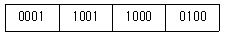
- 2673
- 1984
- 1784
- 1094
(정답률: 알수없음)
62. ROM에 대한 설명 중 잘못된 것은?
- 내용을 읽어내는 것만 가능하다.
- 기억된 내용을 임의로 변경시킬 수 없다.
- 주로 마이크로 프로그램과 같은 제어 프로그램을 기억시키는데 사용한다.
- 사용자가 작성한 프로그램이나 데이터를 기억시켜 처리하기 위해 사용하는 메모리이다.
(정답률: 알수없음)
63. 다음 코드 중 7 비트 코드로 구성된 것은? (단, Parity bit는 제외)
- EBCDIC 코드
- BCD 코드
- GRAY 코드
- ASCII 코드
(정답률: 알수없음)
64. 인터럽트(interrupt)가 발생했을 때 수행해야 할 일이 아닌 것은?
- 인터럽트 처리 루틴을 수행한다.
- 어느 장치에서 인터럽트가 요청되었는지를 조사한다.
- 수행중인 프로그램을 보조 기억 장치에 보관한다.
- 프로그램 카운터의 내용을 보관한다.
(정답률: 알수없음)
65. 프로그램상의 오류를 수정하는 작업을 무엇이라 하는가?
- 테스트
- 디버깅
- 컴파일
- 코드설계
(정답률: 알수없음)
66. 다음 중 CPU가 수행하는 4개 사이클(cycle)에 속하지 않는 것은?
- Fetch cycle
- Execute cycle
- Interrupt cycle
- jump cycle
(정답률: 알수없음)
67. 컴퓨터와 오퍼레이터 사이에 필요한 정보를 주고받을 수 있는 장치는?
- 라인 프린터
- 콘솔
- 자기디스크
- 데이터
(정답률: 알수없음)
68. 컴퓨터의 주메모리(main memory)장치에 널리 사용 되는 것은?
- 자기테이프
- 플로피 디스크
- 하드 디스크
- 반도체 IC 메모리
(정답률: 알수없음)
69. 부호와 1의 보수 표현 방법에 의해 8비트로 10진수 27과 -35를 표현하면?
- 00011011, 10100011
- 00011011, 11011100
- 11100100, 01011100
- 11100101, 01011101
(정답률: 알수없음)
70. 사용자가 고급언어로서 초기에 작성한 프로그램을 무엇이라고 하는가?
- 목적 프로그램
- 원시 프로그램
- 로드 프로그램
- 연계 편집 프로그램
(정답률: 알수없음)
71. 송신공중선계의 충족 조건과 거리가 먼 것은?
- 공중선의 이득이 높고 능률이 좋을 것
- 정합이 충분할 것
- 만족한 지향성을 얻을 수 있을 것
- 급전선으로 부터 복사가 잘될 것
(정답률: 알수없음)
72. 전파법에서 정한 수신설비는 가능한한 다음의 조건을 만족하여야 한다. 이중 틀린 것은?
- 정합이 충분할 것
- 감도 및 명료도가 충분할 것
- 내부잡음이 적을 것
- 선택도가 클 것
(정답률: 알수없음)
73. 정보통신공사업을 영위하고자 하는 자는 대통령령이 정하는 바에 의하여 특별시장, 광역시장 또는 도지사에게 어떻게 하여야 하는가?
- 신고 하여야 한다.
- 인가 하여야 한다.
- 허가 하여야 한다.
- 등록 하여야 한다.
(정답률: 알수없음)
74. 다음 중 종합유선방송국에서 텔레비전방송신호를 수신하기 위한 수신설비가 아닌 것은?
- 수신안테나
- 케이블
- 증폭장치
- 송신안테나
(정답률: 알수없음)
75. 정보통신공사업법시행령에서 분류하는 방송설비의 공사 중 방송국 설비공사에 해당하지 않는 것은?
- 영상·음향설비 공사
- 방송관리시스템의 설비공사
- 방송 송출설비공사
- 프로그램 전송용 전송단국설비
(정답률: 알수없음)
76. 방송의 공정성과 공익성에 관한 설명으로 적합하지 않은 것은?
- 방송에 의한 보도는 공정하고 객관적이어야 한다.
- 국민의 기본권 옹호 및 국제친선의 증진에 기여하여야한다.
- 특정한 집단·이익·신념 또는 사상을 지지 또는 옹호 할 수 있어야 한다.
- 지역사회의 균형있는 발전과 민족문화의 발전에 이바지 하여야 한다.
(정답률: 알수없음)
77. 방송전파의 질을 평가하는 기준이 아닌 것은?
- 주파수 허용편차
- 공중선 전력의 편차
- 점유주파수 대역폭의 허용값
- 스퓨리어스(spurious)발사 강도의 허용값
(정답률: 알수없음)
78. 방송편성에 관한 의견제시 또는 시정요구를 할 수 있는 기구는?
- 방송위원회
- 시청자위원회
- 방송심의위원회
- 방송윤리위원회
(정답률: 알수없음)
79. 지상파방송사업 또는 위성방송사업을 하고자 하는 자는 전파법에 의하여 누구의 허가를 얻어야 하는가?
- 대통령
- 정보통신부장관
- 방송위원회
- 전파방송관리국장
(정답률: 알수없음)
80. 다음 중 방송사업자의 종류가 아닌 것은?
- 유선방송사업자
- 종합유선방송사업자
- 지상파방송사업자
- 방송채널사용사업자
(정답률: 알수없음)